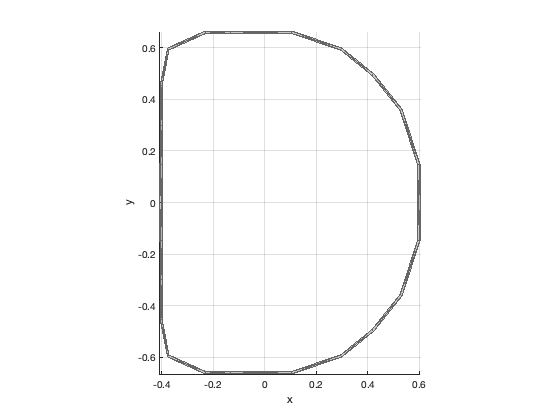

DCOIL Vertices and faces for a D shaped coil
Has a demo which draws the coil in a figure.
Contents
Form:
[v,f] = DCoil( w, x, y )
Inputs
w (1,1) Width of hoop segment x (1,1) X-axis scale x (1,1) Y-axis scale
Outputs
v (:,3) Vertices
Copyright
Copyright (c) 2019 Princeton Satellite Systems, Inc. All rights reserved.